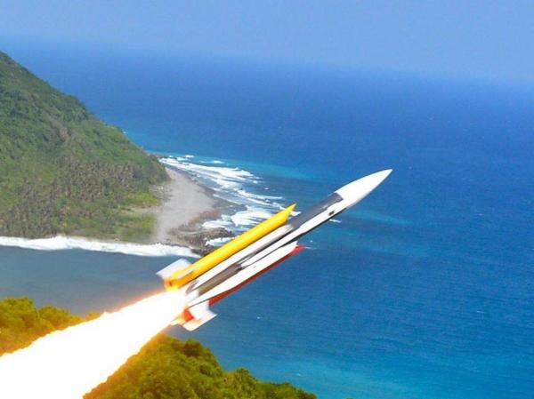
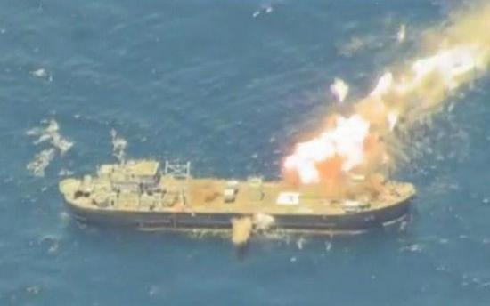

【台湾】【海军】台湾没有航母杀手。。。也没有需要
2014-12-24 12:07:00
原文网址：https://blog.udn.com/MengyuanWang/108908687
昨天（2014年十二月23日），国军的新型飞弹巡逻舰沱江号交舰服役。国军秉承近年来哄骗忽悠百姓的传统，不但把沱江舰吹捧成“航母杀手”，而且还不敢具名，由各媒体不约而同的报导了这个“外界”给的称号，如这一篇：http://www.nownews.com/n/2014/12/23/1554901。几艘500吨级的飞弹舰就能威胁航母战斗群？读者大概早已存疑；我在此给个简单的分析。

雄风二型是中型反舰飞弹，雄风三型是大型反舰飞弹，却都只有小型飞弹的射程。500吨的沱江级比飞弹快艇的甜区（200吨）大两倍以上，速度却不能更高。载弹量虽大，却没有防空能力，在战时得以发射第4枚以后的飞弹机率极小。
我在前文《从1996台海危机到东风21D反舰弹道飞弹》里评论共军的022级飞弹艇时，曾提到“任何飞弹快艇都有两个致命缺点：首先是防空能力薄弱，没有空优的情况下只能靠数量做自杀式攻撃；其次是航程太短，即使有空优掩护也只能在近岸巡逻”。而500吨级的沱江舰就是典型的飞弹快艇，既没有防空能力，也没有执行反潜任务的可能（没有自带声纳，也没有直升机机库），唯一的功能就是发射反舰飞弹。在战时如果有空优，干脆用空射反舰飞弹岂不更快更即时？如果没有空优，再快的飞弹艇也絶对跑不过飞机。而且飞弹艇的吨位小，国际的新趋势是觉得连由战机发射反舰飞弹来打撃，都是杀鶏用牛刀，最近几年还开发了直升机发射的超小型飞弹专门对付快艇。沱江舰所载的雄风飞弹，只有不到150公里的射程；这别提航母战斗群的1000公里防御半径，连一般驱逐舰或护卫舰的舰载直升机的200多公里巡逻半径都无法攻破。10艘沱江舰合起来只要能打沉一艘寻常敌舰，就谢天谢地了，所谓航母杀手真不知从何说起。
雄风三型飞弹，也曾被国军吹成“航母杀手”。其实它是美军1960年代开始研制的ALVRJ的仿制版。ALVRJ射程太短，低空飞行时只有不到75公里，高空飞行才能达到所谓的最大射程，但是因为其飞行速度在衝压火箭中也是最慢的，所以很容易被近防系统拦截，以致美军35年前就拒絶装备。中科院连换成新式的固态燃料都做不到，当然也就不能採用新一代的一体燃烧室（沿用ALVRJ的第一代液态冲压燃料+固态火箭一体燃烧室），因而必须加装助推火箭（图中的黄色圆柱体），进一步增大体积和重量。
正因为飞弹艇对军机和直升机有极大的软肋，真正须要打仗的海军都要求它必须够小够便宜，以便可以大量部署，以数量取胜。可是沱江舰和一般飞弹快艇最大的不同就是它又大又贵。飞弹艇的性能指标里，最重要的不是吨位，也不是速度，更不是载弹量，而是价銭，其次则是飞弹射程，国军刚好反其道而行，在价銭上远高于世界所有其他飞弹艇数倍，飞弹射程则在现代反舰飞弹的最低端。这様的武器完全没有实战效益，真不知国军那几百个将官的脑袋里装的是什么。
上个月雄风三型打靶的照片。飞弹从左下方撃中充当靶舰的LST，从右上方穿出舰体后才爆炸，显然引信有问题。爆炸的火球很小，与共军7系列的小型反舰飞弹相当，即使引信工作正常，也顶多只能重创4000吨以下的目标。自贴航母杀手的称号，实在无耻。
最后补充一点：航母是用来打撃离岸2000公里以上的目标用的。在2000公里内，可以用陆基飞机+空中加油，性能好、价銭低、数量多。台湾全岛都在大陆东南沿海机场的500公里半径内，共军连加油机都用不着，絶对没有理由动用航母来对台作战，所以所谓的航母杀手，根本就是个偽命题，是国军胡扯出来让无知百姓自我感觉良好的。而胡扯、无知和自我感觉良好，也就是现代台湾的写照。